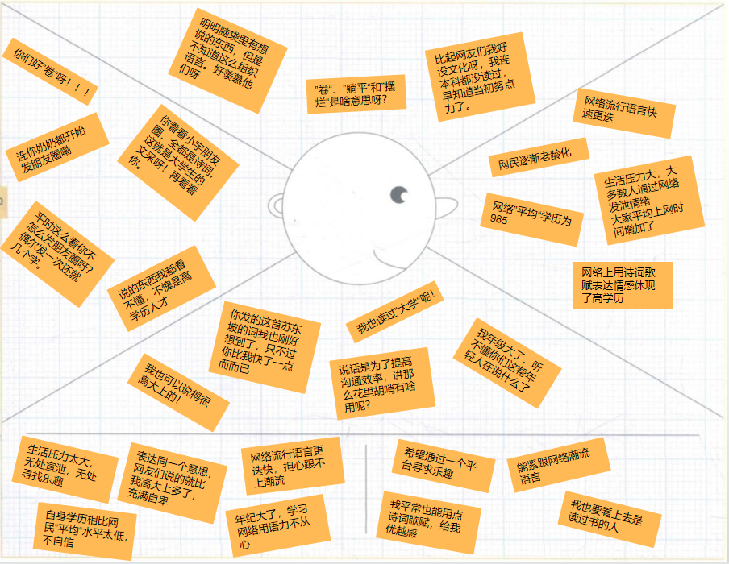
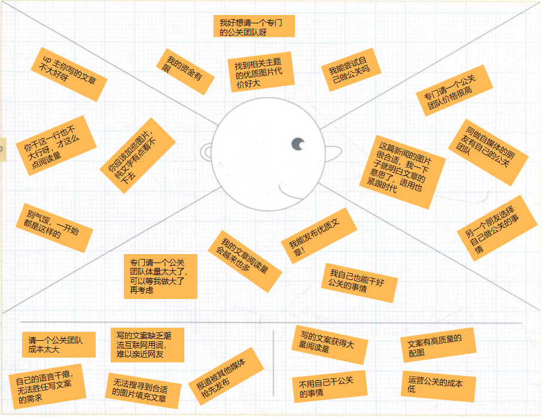

Lab3-商业模式设计
Lab3-商业模式设计商业模式设计简介组员信息工作概要<!-- ddl=12-08 -->度量数值<!-- ddl=12-08 -->客户洞察<!-- ddl=12-08 -->日常网络交流者统计特征移情图宣传工作者统计特征移情图书面写作者统计特征移情图构思<!-- ddl=12-08 -->创意一驱动因素What if 问题创意影响创意二驱动因素What if 问题创意影响创意三驱动因素What if 问题创意影响创意四<!-- czh ddl=12-05 -->驱动因素What if 问题创意影响创意五<!-- xqh ddl=12-05 -->驱动因素What if 问题创意影响创意六<!-- xqh ddl=12-05 -->驱动因素What if 问题创意影响视觉化思考<!-- ddl=12-03 -->视觉化的商业模式画布分析说明模型构建<!-- ddl=12-03 -->更新过的商业模式画布市场潜力预估模块联系支撑画布构建的基本事实讲故事<!-- ddl=12-08 -->团队视角<!-- xqh ddl=12-05 -->宣传工作者视角<!-- wfs ddl=12-05 -->书面写作者视角<!-- slf ddl=12-05 -->日常工作者<!-- czh ddl=12-05 -->场景<!-- ddl=12-08 -->
商业模式设计简介
组员信息
| 姓名 | 学号 |
|---|---|
| 熊丘桓 | 201250172 |
| 孙立帆 | 201250181 |
| 王福森 | 201250185 |
| 蔡之恒 | 201250127 |
工作概要
度量数值
客户洞察
日常网络交流者
日常网络交流者，即“大众网民”（待扩充）。
统计特征
我国网民总规模 9.89 亿；收入上，月收入 8000 以上占 14.8%，过半收入超 3000；受教育程度，本科率 10% 左右，绝大多数网民的文化程度不高；职业上，学生、个体户和农民占比高；人口结构上，呈现老龄化趋势；上网时间上，平均每天近 4 小时。1
移情图
我国网民数量巨大，由于网络降低了人人互联成本，信息传递十分迅速，也导致互联网潮流语言必将是快速更迭，小宏平时忙于工作，偶尔翻阅朋友圈和知乎，每过一段时间就会冒出一些看不懂的词，每次都得查搜索引擎和各大网站来紧跟潮流，感觉需要花费较大力气跟上互联网。同时互联网说谎话没代价，很多人自称高学历，是不是 copy 一首诗词歌赋发到朋友圈，显得自己有文人风骨，小宏就经常看到小宇在朋友圈发一些自己看不懂的诗词，还总是听到自己妈妈夸小宇，感觉很不是滋味。虽然自己可以也 copy 一篇发到朋友圈，但是怕自己朋友倒时候问自己自己答不上来。小宏毕业后很少写文章，平时说话也少，上网时间也越来越多，导致”失语症“愈发严重。Get-It 平台可以很好的解决小宏的问题，不用花很大力气就能了解最新网络用语、输入意思即可获得相关诗词歌赋、输入模糊意思即可得到文笔优美的句子等等。

宣传工作者
宣传工作者，包括自媒体人、企业宣传工作者等（待扩充）。
统计特征
我国自媒体人生产内容以图文为主，约占 80%，从业人数超 260 万，从业人员主要为 30 岁以下的年轻人，超 8 成自媒体人学历为专科和本科，学历较高，但从事自媒体行业年限较短，超 8 成低于两年。
移情图
Get-It 平台可以根据输入的模糊意向得到相应的文章或句子，自媒体从业者可以从这些文章中学习语用，并且部分摘抄到自己的文章中，以此来润色文章。自媒体从业者还可以在平台上搜索相关的网络流行语言，理解其意思并且运用到文章中，使得文章更加接地气。自媒体从业者还能从平台上获得相关内容的大量优质图片，不必在苦于花费大量时间在浩如烟海的互联网中搜寻。

书面写作者
书面写作者，包括新闻工作者、秘书、出版社工作人员、文艺创作者等（待扩充）。
统计特征
我国秘书行业从业人员已经超过 2000 万，但是 80% 以上的秘书没有受过专门培训。职场上的秘书分为三个层级，普通秘书收入约 2000-4000 元左右，总经理秘书约 5000 元，而外企公司总裁办公室高级秘书的月薪大约在 8000 元到 1 万元之间。2
移情图
目前书面工作者普遍没有接受过专门的培训，文笔功底有待提升，素材收集能力也有发展空间。Get-It 平台可以陪伴书面工作者度过最艰难的入门时刻，这个阶段书面工作者苦于提升文笔，润色特定主题的文章，为文稿搜集素材，Get-It 平台正好可以为他们提供相关主题的文章来学习或引用，提高高质量图文和诗文来润色文章，帮助他们获得领导的青睐。

构思
创意一
驱动因素
财务驱动，创新来源于对成本结构的缩减。
What if 问题
如果我们不自己持有素材资源，而是和版权方对接，向用户提供指向版权方资源的入口，即链接，会怎样?
创意影响
如果需要自己持有素材资源的话，由于用户的需求是十分多样化的，我们并没有办法准确的知道持有哪些版权素材资源是最合理的，因此为了给用户良好的体验，我们需要向版权方支付大量的版权费，使得我们的成本结构变得过于重量级，削弱了我们的抗风险能力；而直接与版权方合作并通过为其资源引流的方式来为用户提供服务虽然一定程度上减少了我们的单次服务利润，但是总体上看使得我们可以提供更大量的服务，且使我们的成本结构更加健康，抗风险能力更强。
创意二
驱动因素
供给驱动，我们的产品创造了新的价值主张：据意查图 / 文，而不是据图 / 文查意。
What if 问题
如果我们提供据意查图 / 文，而不是据图 / 文查意的服务会怎样？
创意影响
结合调研和小组成员的切身体验，互联网世代 “失语症” 是一个广泛存在的问题，但是目前尚无一个成熟的商业产品针对这一需求。借助近年来深度学习技术的发展，我们通过多模态的反向查询来满足用户的这一广泛存在但是尚未被很好的满足的需求，这是我们提出的新的价值主张。
由于这一价值主张的落地依赖于前沿的技术，因而影响了我们的商业模式的关键业务（算法研发）和核心资源（知识性资源，人力资源）；而我们的价值主张针对的需求的性质则影响了我们的商业模式的客户关系（由于内容性的资源是与时俱进的，需要用户的参与，因此维护一个社区是重要的）和客户细分（主要针对日常有表达需要的群体）。
创意三
驱动因素
客户驱动
What if 问题
如果我们为用户提供自动润色文章的工具会怎么样？
可以从目标客户的移情图分析中得知，我们的用户使用 Get-It 平台除了愿意借用这个社区分享高质量图文外，还有一部分需求是对自己写的文章中的部分语句进行替换，换成高质量图文，以此达到润色文章的目的。既然如此我们为何不可直接为用户提供自动润色文章的工具，这将省去用户很大一部分精力，为用户提供更加遍历的平台，提高用户对自身需求满足的可获得性。
创意影响
对此我们的价值主张将多一项：为用户提供自动润色文章的功能；客户关系的自动化服务程度将大大提升；收入来源将增加一项：自动润色文章使用费；关键活动将多一项：自动润色文章的 NLP 模型开发；成本结构将增加一项：开发自动润色文章的 NLP 模型费用。
创意四
驱动因素
What if 问题
创意影响
创意五
驱动因素
客户驱动
What if 问题
如果我们将用户群体扩展到学生群体会怎么样？
创意影响
许多学生面临着繁重的学术任务，包括课堂展示、文献综述写作和实验报告写作等等，相比于精准表达，学术实践本身才是学习的核心。为了帮助学生平稳过渡开始学术实践的表达阶段，以更好的将精力集中到学术实践和学术思想本身，我们尝试提供能够满足学生使用要求的产品服务，例如规范成熟的学术表达范例、学术展示模板等。学生群体尝试新产品的意愿强烈，该产品服务在学生群体中更容易得到推广并受到青睐。
创意六
驱动因素
What if 问题
创意影响
视觉化思考
视觉化的商业模式画布

分析说明
模型构建
更新过的商业模式画布

市场潜力预估
新的商业模式画布在旧画布的基础上进行了不超过 30% 的修改，借用商业模式评估和蓝海战略等分析探究手段，力争从设计上减少成本并提高收益，增加商业模式的稳定性和灵活性，降低了商业模式的经营负担。
模块联系
经过上次作业蓝海战略的探究，我们选择新加入“社交媒体”作为关键合作的一部分，加入“工具使用费”作为收入来源的一部分。并删除原画布中的收入来源要点“广告费”。
我们尝试开展与社交媒体的深度合作，这有利于捕捉流行于社交媒体的网络表达素材内容。因此，我们在重要合作中添加了社交媒体部分，以期助推 Dark Mode 网络流行工具集开发。
我们在以上的工作中分析认为，软件平台开发和搜索引擎推荐算法研发在我们的产品项目中占据重要地位，作为我们的核心知识产权，这些工具可以作为产品的一部分，出租或销售给其他有需要的企业或单位使用，收入工具使用费，增加收入来源。
根据网络广告市场的调研报告[^xqh-17]，中小互联网企业的流量入口很难吸引广告费作为成规模的收入，因此我们在修改商业模式时将广告费不再作为主要的收入来源。
我们在上次作业的 3.2.1.1 基础设施优势/劣势评估 分析得出，我们如果扩展并加深与素材资源版权方的联系，有利于软件平台开发、维护和升级的顺利进行；依托版权方提供的大量资源，我们可以顺利度过高质量图文原始积累的“冷启动”时期，并在启动十七过后持续帮助资源内容进行迭代。该合作的顺利进行，将进一步丰富我们的知识性资源和素材资源。
支撑画布构建的基本事实
支撑画布构建的基本事实参见上次作业的 2. 商业模式环境
讲故事
团队视角
宣传工作者视角
自媒体人
书面写作者视角
秘书公文写作
日常工作者
Dark Mode
场景